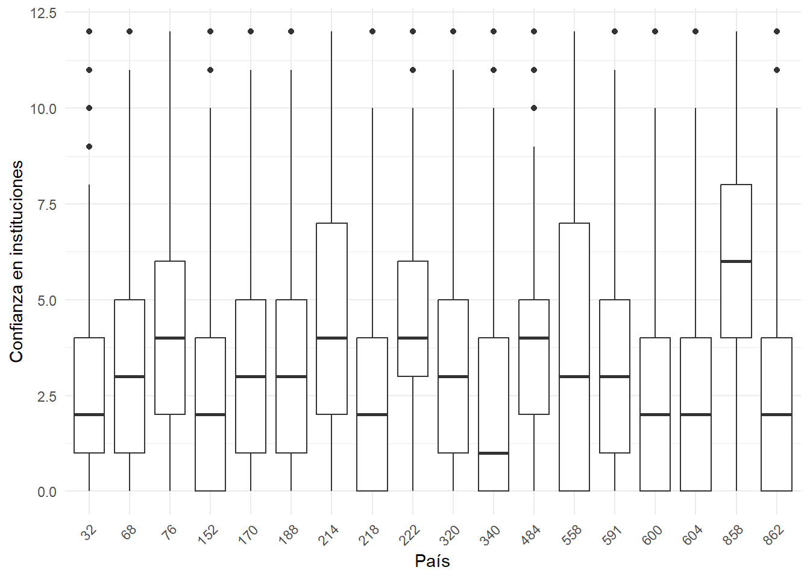

pacman::p_load(sjlabelled,
dplyr, #Manipulacion de datos
stargazer, #Tablas
sjmisc, # Tablas
summarytools, # Tablas
kableExtra, #Tablas
sjPlot, #Tablas y gráficos
corrplot, # Correlaciones
sessioninfo, # Información de la sesión de trabajo
ggplot2) # Para la mayoría de los gráficospractico 1
Trabajo 1
Primer práctico de quarto en el optativo
Primer paso
Acá va el paso 1
Qué hacer en este paso:
- una
- lista
- con
- números
Continuación primer paso
Acá va el paso 1.2
qué hacer en este paso:
una
lista
para
prácticar
Segundo paso
Acá va el paso 2
Dos negritas son para destacar
Una negrita es para la cursiva
Continuación segundo paso
Qué hacer en este paso:
Subir una imágen

Cargar paquetes
Cargar base de datos
load(url("https://github.com/Kevin-carrasco/R-data-analisis/raw/main/files/data/latinobarometro_total.RData")) #Cargar base de datos
proc_data$idenpa <- as_factor(proc_data$idenpa)Descriptivos
sjmisc::descr(proc_data,
show = c("label","range", "mean", "sd", "NA.prc", "n"))%>% # Selecciona estadísticos
kable(.,"markdown") # Esto es para que se vea bien en quarto| var | label | n | NA.prc | mean | sd | range | |
|---|---|---|---|---|---|---|---|
| 2 | conf_gob | Confianza: Gobierno | 19748 | 2.2569788 | 0.9668321 | 1.0013733 | 3 (0-3) |
| 1 | conf_cong | Confianza: Congreso | 19382 | 4.0685013 | 0.8193169 | 0.8761394 | 3 (0-3) |
| 4 | conf_jud | Confianza: Poder judicial | 19467 | 3.6477925 | 0.9404633 | 0.9232323 | 3 (0-3) |
| 5 | conf_partpol | Confianza: Partidos politicos | 19653 | 2.7271827 | 0.6032158 | 0.7975983 | 3 (0-3) |
| 7 | educacion | Educación | 20201 | 0.0148485 | 1.8826296 | 0.7588656 | 2 (1-3) |
| 9 | sexo | Sexo | 20204 | 0.0000000 | 1.5215304 | 0.4995486 | 1 (1-2) |
| 6 | edad | Edad | 20204 | 0.0000000 | 40.9985151 | 16.5383434 | 84 (16-100) |
| 8 | idenpa | idenpa | 20204 | 0.0000000 | 365.3783409 | 260.4932509 | 830 (32-862) |
| 3 | conf_inst | Confianza en instituciones | 18768 | 7.1075035 | 3.3030158 | 2.8506243 | 12 (0-12) |
esta es nuestra Tabla 1
Gráficos
#| fig-cap: “Plots”
graph1<-ggplot(proc_data, aes(x = idenpa, y = conf_inst)) +
geom_boxplot() +
labs(x = "País", y = "Confianza en instituciones") +
theme_minimal()+
theme(axis.text.x = element_text(angle = 45, hjust = 1))
graph1Warning: Removed 1436 rows containing non-finite outside the scale range
(`stat_boxplot()`).
este es nuestra Figura 1